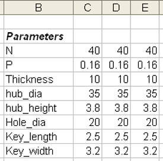
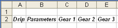

选择工具→电子表格。
由于正在使用建模应用模块，因此打开的是建模电子表格。已经导入表达式，并添加了描述列。
要创建族表，首先，需要将 C 列中的值放到 D 列和 E 列中。
这个族表中包含参数名称列(B 列)，以及三列用于放置这些参数的不同值(C、D、E 列)，描述列(A 列)未显示在图中。

修改不同列中的参数值，可以定义部件族，其中每一列包含部件族中一个成员的参数。
在 C、D、E 列的顶部单元格中添加标题：齿轮1、齿轮2以及齿轮3。
|
提示 |
尝试将 B2单元格中的内容复制到其它单元格中，然后修改文本。  |